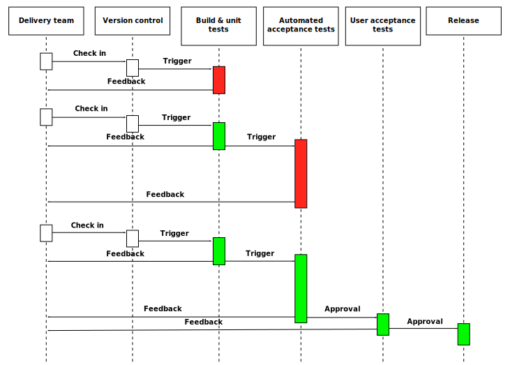

Continuous Integration
&
Continuous Delivery
speakers:


Plan
Part 1 - CI / CD : What? Why? How?
Part 2 - CI @ Magillem : from Jenkins 1 to Jenkins 2
Part 3 - Jenkins 2.0 : To Infinity and Beyond (cool stuff demonstration!)
Part 1
CI / CD : What? WHy? How?
What?
Continuous Integration: In software engineering, CI is the practice of merging all developer working copies to a shared mailine frequently to prevent integration problems.What?
Continuous Integration: Born in early 90's and adopted shortly after by Extreme Programming (XP).What?
Continuous Delivery: In software engineering, CD is an approach in which teams produce software in short cycles, ensuring that it can be reliably released at any time.What?
Continuous Delivery: It must not be confused with Continuous Deployment which aims at automatically deploying any change to production!What?
- Unit test > Package > Test environment deployment
- Continuous Integration
- functional tests > preproduction environment > stress tests
- Continuous Delivery
- auto scale + production environment deployment
- Continuous Deployment
Why?
TLDR ;o)
You never want to debug something like this :
International Obfuscated C Code Contest
Why?
quality, quality, quality
- Time saver: bugs are detected early in the process (simple and functional bugs and also performance issues)
- More feedback to developers = better reactivity
- Avoid last-minute chaos at release dates
- Constant availability of a "current" build for testing, demo or release purpose
- Code merging made less painful because done often
How?
By Grégoire Détrez, original by Jez Humble - This file was derived from: Continuous Delivery process diagram.png, CC BY-SA 4.0, Link
{kind=link}
How?
By...
- using a single source code repository
- automating the build and keeping it as fast as possible
- making it self-testing
- testing it in a clone of the production environment
- making the build easily available to everyone
How?
By using a Continuous Integration server!
Several solutions exist on the market:
- Jenkins
- Travis CI
- Atlassian Bamboo
- JetBrain TeamCity
- IBM rational Build Forge
- Team Foundation Build
- and many more...
Part 2
CI @ Magillem : from Jenkins 1 to Jenkins 2
From Ant builds to Maven builds
Before
Big Ant scripts with lots of custom java tasks and client specifics tasks.
duplicate scripts, config files, installer files, etc.
Now (well, pretty much... :D)
Tycho for RCP based applications
Maven for web applications
From very long-running jobs to fasts ones?
Before
Build and validation jobs taking hours and hours
Soon
Fast builds and validation jobs thanks to parallelization
From job GUI configuration to job as code
Before
Each job is configured in jenkins
Lots of variables defined in various places
Now (ongoing)
versioned job configuration with Jenkinsfile!
From poor availability and hard deployment to automation
Before
- deliveries not available to the team
- Manual installation
- Manual GUI tests
Now (ongoing)
- Better availability of the deliveries
- GUI tests automation
- web app automatic deployment
Infrastructure & Methodology
2 environments :
- integration : http://mdscal:8081/jenkins/
- production : http://mdscal:8071/jenkins/
test your job, plugin upgrade and jenkins upgrade on integration.
> then deploy/upgrade production
Part 3
Jenkins 2.0 : To Infinity and Beyond
What's new
- Jenkins Pipeline : a single job for build/test/deploy
- Pipeline as code
- Simplified UI: tab, icons, ...
- backward compatible most of the time
Pipeline as code
- Pipeline is in groovy
- Pipeline is stored in our VCS
- Job configuration is saved close to the code and by project
- Backup simplified
Blue Ocean
DEMO Jenkins 2 And RCP
Here is some demo project witch use jenkinsFile
- jhipster : create with yeoman
- rcp : mix of https://github.com/eclipse/tycho-demo and http://www.vogella.com/tutorials/EclipseTycho/article.html
- pojo : ugly code